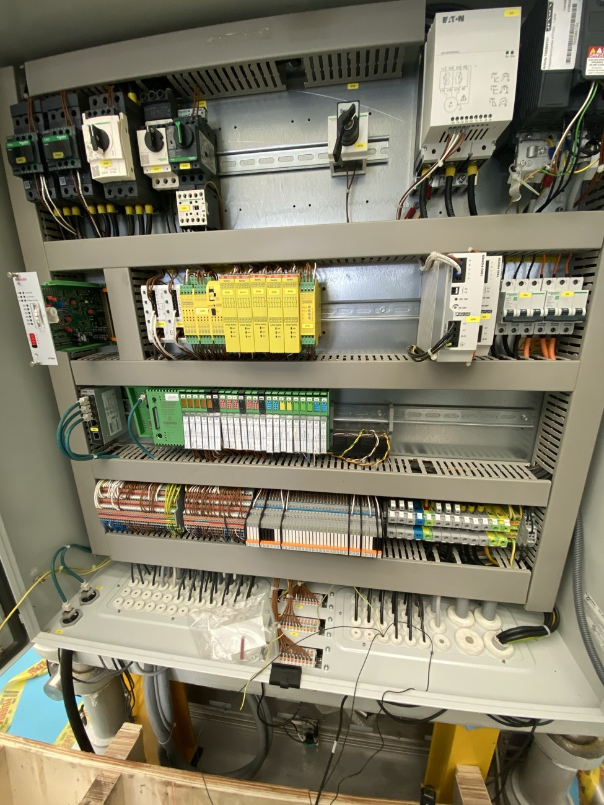
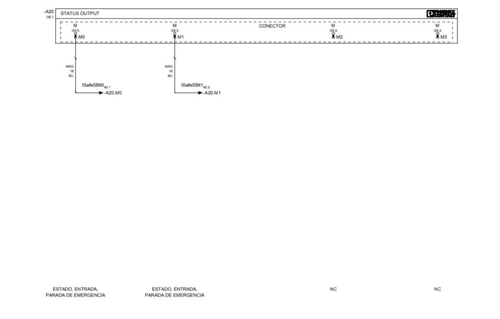

Videollamada en vivo entre el celular de campo y la consola de oficina: señala, dibuja, congela el cuadro, toma fotos, graba y comparte pantalla — sin que nadie instale nada.


Desde la consola creas un enlace o QR de la sesión y se lo mandas al técnico de campo.
El técnico de campo abre el enlace en su teléfono y permite la cámara. Nada que instalar.
Ves su cámara en tiempo real: señalas, dibujas, congelas el cuadro y documentas lo que hizo falta.
Señala, traza, marca con flechas y elipses o escribe una etiqueta directo sobre la cámara del técnico.
Detén la imagen para revisar un detalle con calma sin perder la conexión.
Guarda fotos con las anotaciones incluidas o graba la sesión completa: imagen, marcas y audio.
Manda tu pantalla al teléfono del técnico cuando haga falta mostrarle un plano o manual.
Transcribe la llamada, junta tus notas y redacta un reporte de servicio en segundos.
Tu logo y el nombre de tu empresa aparecen en la consola, la invitación y el reporte.
Los técnicos de campo no necesitan cuenta: entran directo con el enlace o el código que les compartieron.